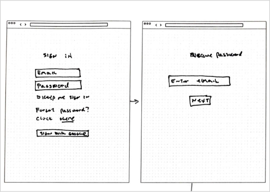
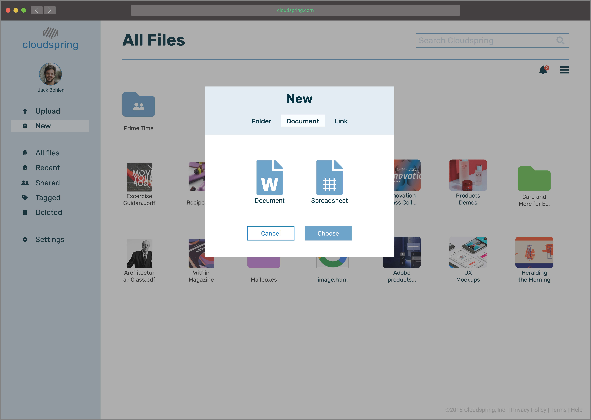
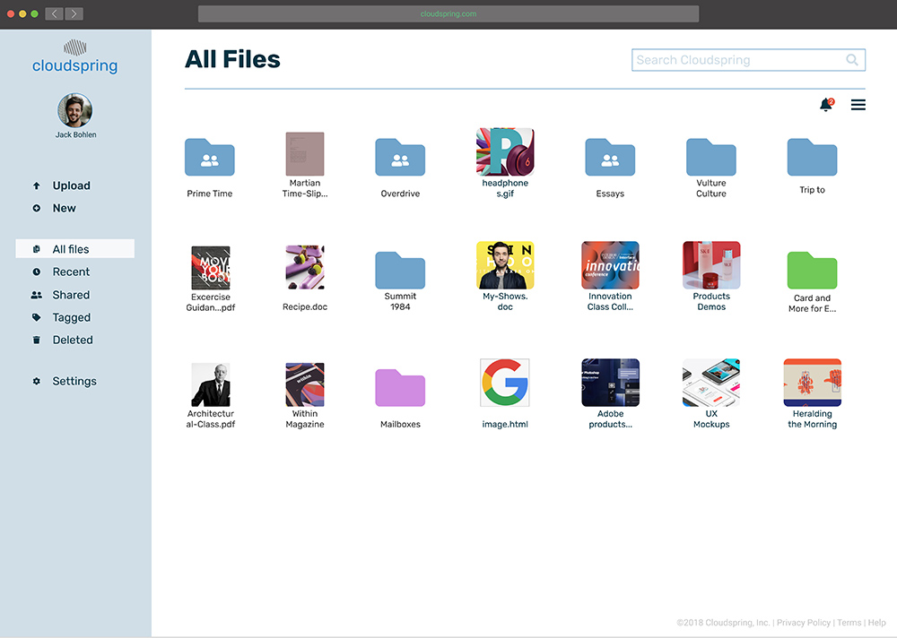
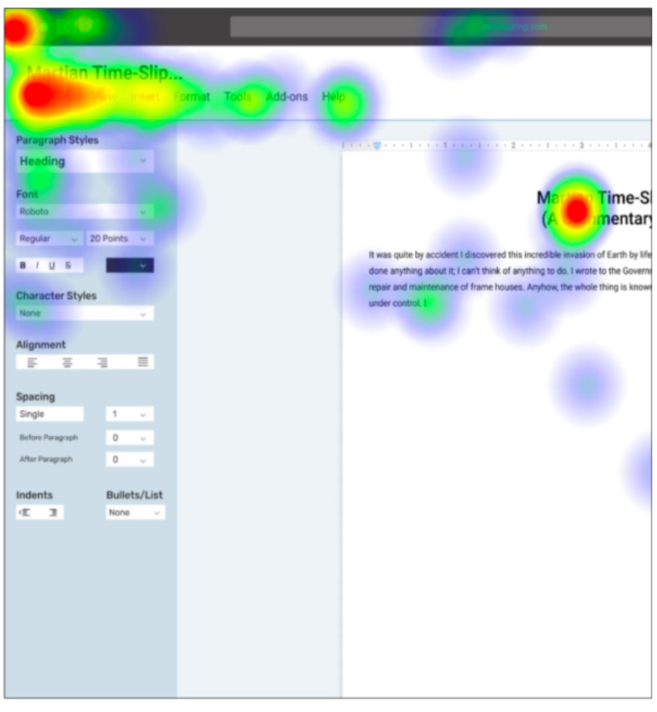
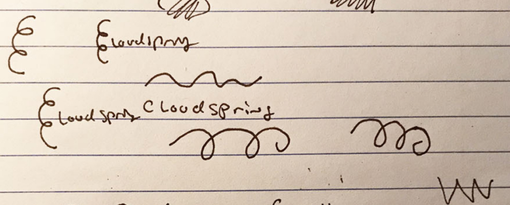
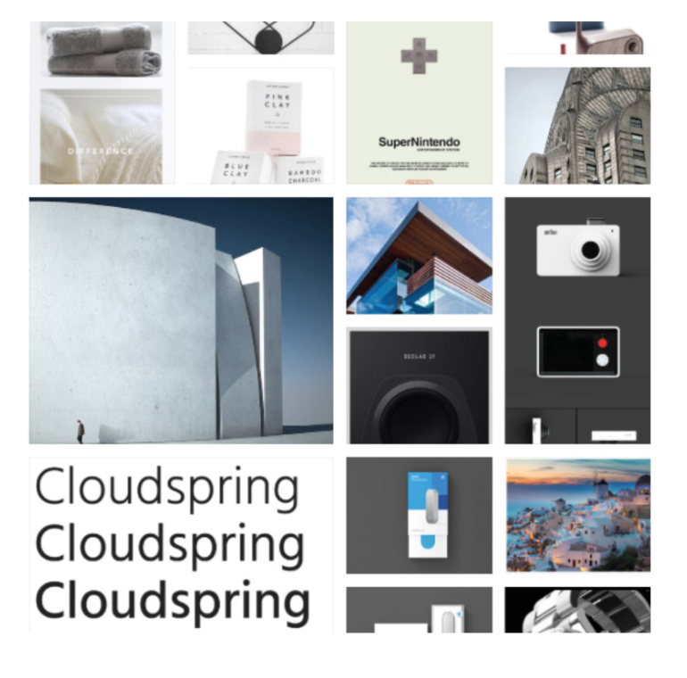
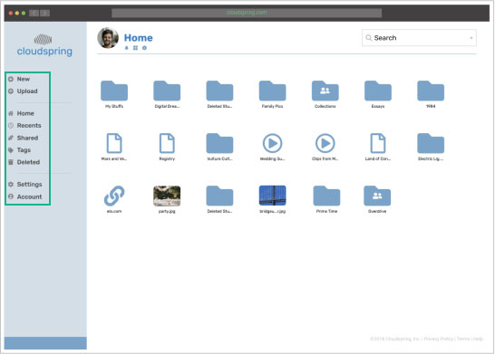
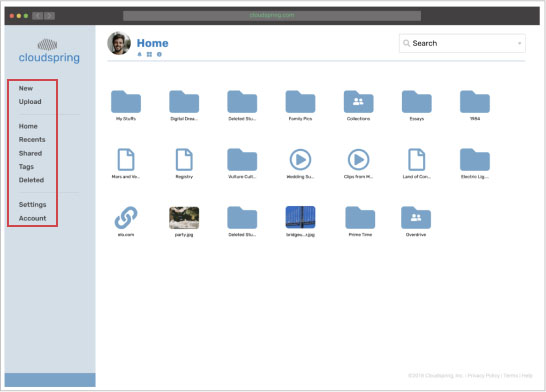
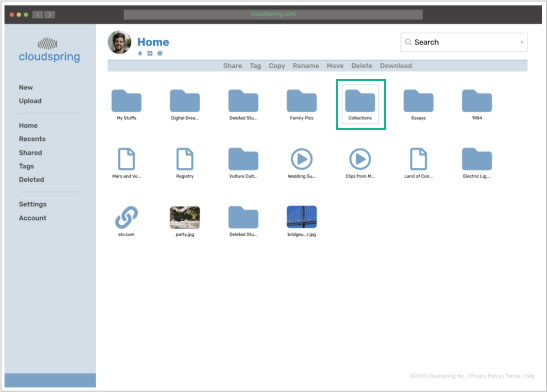
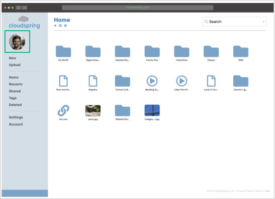

Cloudspring
Cloud-based file storage and organization tool that facilitates the user to create and collaborate seamlessly.
View PrototypeSummary
The Challenge
The client wanted a cloud storage and organization application. Even though there are other well-known companies in this field, the goal was to focus on the user having an easier interaction when saving, creating, and sharing any kind of content. By doing this, the client believed that a space can open up for this new application. Identifying the target audience was needed for this project, and also developing an identity for the brand.
The Solution
Upon receiving the project and asking follow-up questions to the client, my starting point was to conduct a research to get to know potential users, then progressing to design, and finally zero in on testing, to make sure that the solution will satisfy the end-user. The final solution was an intuitive and easy-to-use app with a modern and minimalist design that invites the user to use it effortlessly. It also filled all the requirements set forth by the client.
Process

Project Discovery
Project brief, technical specifications and timeline.

Strategy
User research, competitive analysis and personas.

Information Architecture
User stories, user flows, wireframes, prototypes and usability test.

Visual Design
Sketches, mindmaps, moodboards, style guide, hi-fi mockups and preference test.
Project Brief
This, being a new app in the market, the client wanted to make an impact in the productivity of the would-be users. She requested that the app should as MVP at the time of launch:
- Save content found on the web (links, images, videos, etc.)
- Organize content using categories, tags, groups, and/or folders.
- Create content (notes, documents, maybe spreadsheets).
- Upload files (videos, images, PDFs, etc.) from a computer or mobile device.
- Share a single item with someone else (and vice-versa).
- Share a folder or group of items with someone else (and vice-versa).
- Connect with other users for real-time collaboration.
Roles
- Researcher
- Content Producer
- Usability Tester
- Visual Designer
Deliverables
- Competitive Analysis
- User Personas
- User Stories
- User Flows
- Wireframes
- Branding
- User Testing
- Prototypes
Tools Used
- Google Forms
- Google Docs
- Draw.io
- Figma
- Photoshop
- Illustrator
- InVision
- Maze
- UsabilityHub
Duration
- 3 months
Research
To get to know the user, I used a survey as a method to do the primary user research. My main focus was to know the user’s priorities when using a storage service, as well as features they like or dislike, and how this web app could help them in their everyday life.
These were some of the findings:
View Survey and AnalysisTakeaways
At the end of this research, I discovered that the potential user was someone that was experienced in using a cloud application. I also learned that the user is a frequent user of this kind service to accomplish their needs.
Competitive Analysis
To have a better understanding of the strength and weaknesses of the competition, I conducted a competitive analysis. I spent quiet some time here because I wanted to know what made these services so popular, besdies their name reconigtion. These three competitors were analyzed:
Google Drive integrates all their services into the cloud app, but because of the amount of those services, users can get easily confused. One of the advantages that was discovered was how easy is to find any file and how easy was to collaborate.
Dropbox I found to be very easy to use and its integration with the user’s desktop made it a “plus” feature. On the downside, it doesn't have a built-in spreadsheet creator and the functions are not consistent across devices.
iCloud has a robust content organization feature (folder creation and color tagging), it also has a very integrated documents, presentations and spreadsheet creator. As a minus, the service is not seems very professional, since it gives the impression that is geared towards personal use rather than professional.
Takeaways
By analyzing the competition, I could acquired the necessary knowledge of what regular users experience when using other applications, as well as what was missing or what could be enhanced for the client’s app.
User Personas
Upon analyzing the user survey, it was time to bring empathy to this data. I accomplish this by crafting 3 different user personas.
“I would like to store all my files in one place, access them anywhere and easily find them”Mark Abernathy
32 years old
Assistant Video Editor
Motivations
Mark stores a lot of video clips and photos. He also collaborates with others when writing scripts and sends photos to his clients for approval. However, he does not have a lot of storage capacity because is not affordable. Because of this, he finds himself storing some files in his other Dropbox account. He is a visual person, and feels frustrated that he can't tag his videos or notes by color for easy identification in any of his storage solutions. He would like to have one economical, large capacity storage solution where he can sync all of his files and organize them in folders.
Goals
- Have a large capacity storage for all his data.
- Create folders, and tag files and notes by color.
- Save or create a file and see it on all his devices.
- Collaborate with other.
Frustrations
- Can’t easily identify his videos or notes.
- Low capacity cloud solution.
- Has to keep two accounts for capacity reasons.
Renee Palmer
45 years old
Teacher
Motivations
Renée uses Dropbox to plan all her classes and share some assignments with her students. Since she teaches many subjects, sometimes is difficult for her to understand the interface and create folders and organize all her courses. She also feels that her current cloud solution is slow when it comes to uploading high resolution pictures and videos and also syncing with her other devices. She would like to have a cloud solution that offers a easy way to create and see folders, and also that uploads and sync in all her devices instantly.
Goals
- To understand the interface to get things done.
- To easily create folders to organize her projects.
- To upload and sync her files quickly.
Frustrations
- Spent too much time trying to find features.
- Can’t create easily folders.
- Can’t upload and sync fast.
Takeaways
By creating personas, I could think of them like real users, and throughout the project, and with every decision, I kept asking this question to myself: ‘Would Mark like this feature?”, “Is this flow easy to Paula?”, “How would Renée accomplish this task?” Keeping these personas in mind helped me always think about the end user in preparation for the testing phase.
User Stories
In order to design with the user’s perspective in mind, I moved on to create user stories based on the information collected on the user survey and also data from the personas. The priorities considered where for a new and returning user. I designed for all the high priorities and some medium and low priorities too.
| Role | Tasks | Importance |
|---|---|---|
| As a new user | I want to create an account | High |
| As a new user | I want sign into my acount | High |
| As a new user | I want to sync with other devices | Medium |
| As a new user | I want to upgrade my account | Medium |
| As a new user | I want to customize my account | Low |
| As a new user | I want to take a tour of the interface | Low |
| As a returning user | I want to log in to my account | High |
| As a returning user | I want to recover my password | High |
| All users | I want to change the capacity of my account | Medium |
| All users | I want to create a folder | High |
| All users | I want to create a file | High |
| All users | I want to create a document | Medium |
| All users | I want to create a note | Medium |
| All users | I want to upload a folder | High |
| All users | I want to upload a file | High |
| All users | I want to upload a PDF | Medium |
| All users | I want to upload a picture | Medium |
| All users | I want to upload a video | Medium |
| All users | I want to save a file from a website | Medium |
| All users | I want to save a link from a website | Medium |
| All users | I want to save a picture from a website | Low |
| All users | I want to save a video from a website | Low |
| All users | I want to download a file | Medium |
| All users | I want to download a folder | Medium |
| All users | I want to download a PDF | Medium |
| All users | I want to download a picture | Medium |
| All users | I want to download a video | Medium |
| All users | I want to share with others via text message | Medium |
| All users | I want to share with others via text message | Medium |
| All users | I want to share with others via social media | Medium |
| All users | I want to share with others via email | Medium |
| All users | I want to share with others via video conferencing | Medium |
| All users | I want to tag files by color | Medium |
| All users | I want to tag folders by color | Medium |
| All users | I want to organize files by category | Medium |
| All users | I want to organize folders by category | Medium |
| All users | I want to share a file | Medium |
| All users | I want to share a folder | Medium |
| All users | I want to share a document | Medium |
| All users | I want to share a spreadsheet | Medium |
| All users | I want to share a note | Medium |
| All users | I want to share a picture | Medium |
| All users | I want to share a video | Medium |
| All users | I want to open a file | Medium |
| All users | I want to open a folder | Medium |
| All users | I want to close a file | Medium |
| All users | I want to close a folder | Low |
| All users | I want to customize my profile | Low |
| All users | I want to collaborate | High |
| All users | I want to see my synced devices | Low |
| All users | I want to edit my settings | Low |
| All users | I want to edit my profile | Low |
| All users | I want to edit my privacy | Medium |
| All users | I want to edit my security | Medium |
| All users | I want to filter a file | Medium |
| All users | I want to share a folder | Low |
| All users | I want to search a file | Low |
| All users | I want to move a folder | Low |
| All users | I want to delete a folder | Low |
| All users | I want to rename a folder | Low |
| All users | I want to copy a folder | Low |
| All users | I want to move a file | Low |
| All users | I want to delete a file | Low |
| All users | I want to rename a file | Low |
| All users | I want to copy a file | Low |
| All users | I want to see my notifications | Low |
| All users | I want to back up my files | Low |
| All users | I want to back up my folders | Low |
| All users | I want to assign permitions to files | Low |
| All users | I want to assign permissions to folders | Low |
| All users | I want to lock my files | Low |
| All users | I want to lock my folders | Low |
| All users | I want to see my recent files | Medium |
| All users | I want to see my deleted files | Low |
| All users | I want to see my deleted folders | Low |
| All users | I want to archive a file | Low |
| All users | I want to archive a folder | Low |
| All users | I want to see an archived file | Low |
| All users | I want to see an archived folder | Low |
| All users | I want to log out | Medium |
User Flows
To design an intuitive product, I designed user flows based on the user stories. This helped me think once more about the user and how they can accomplish their different tasks as simple as possible. Reviewing the competitive analysis helped me to refine and enhanced the flows of the more establish cloud storage apps that are known to users.
Takeaways
I was at the beginning of the project a bit glued to follow the user stories ans flows just as I designed them. Only after the usability tests and seems real user interacting with the prototype, let me undertand that these are initial guides, and even, though some flows changed I knew this change was dictated by the user and not by my own bias. Incorporating and being flexible in changing them helped me to deliver a more cohesive design.
Wireframes Design and Testing
Finalized the user flows, it was time to start putting the research into a design. I first sketched the different screens on paper, and drew them on the computer. After all the screens were done, I performed the first usability test to see how this attempt performed.
Initial sketch of dashboard and tagging action
Sign in process wireframes
Wireframe showing the process of uploading an image

Wireframe showing the sign up page
See all the wireframesChanges Made After the Usability Test
It was a challenge to see the user picking apart the design. In some cases the accomplished the task I handed to them, and in some other cases they just got stuck (Like in the where a user was trying to log in for the first time with his password). I listened closely and watched them, and iterated on the design to remove these friction points.

Where to retrive the code?
Users where confuse on where they were suppose to retrieve this code. Was it on the email? Some of them asked me if they were suppose to receive the code on their phones as a text message. To resolve the issue, I added the option of receeiving the code on their email or as a text message.
Add icons on the sidebar
While I was watching the user interacting with the sidebar, I noticed that they were slowing down a bit to read the buttons. I knew righ away that one option to aid the user was to add icons next to the buttons. I was opposed to doing that because I wanted to keep the UI as clean as possible. Nonetheless, the isssue persisted with the other user and I had to perform a preference test (As will be shown later). The result was that people overwhelmed prefered icons. This was an opportunity for me to listen to the users.

Add "Tour the Interface"
Upon arriving to “home” after signing up, some user where confuse about the UI. I added a message for the empty state as a starting point for the new user so they can get familiar with the app.

The Label "Tags" was confusing to some users
Some user did not know what “Tags” mean. They where looking everywhere on the interface to complete the task of tagging an item. I had to apply restrain to me in the sense that I wanted to help them out, but I knew what was the problem right away when an user expressed that “tagged” sounds more like a buttom that they would click.

Added an "X" on Modals
For my surprise, user could not close the modals, because for an oversight I did not add a way fo the user to close the modals. I assumed that they would complete the action. When I saw them stuck on that state, I knew that for the next iteration I had to add an “X” to indicate that the modal can be closed without completing the action. Later on I opted for a “Cancel” buttom to accomplish the same action.
Watch the Usability Test VideosTakeaways
The feedback garthered after the usability test was invaluable. It let me evaluate some of my ideas and see if they work in some cases they did, in others, they were not good at all, and I even discovered some mistakes. This feedback let me push the design forward.
High Fidelity Prototype Design and Testing
To implement the findings of the usability test, and to apply the branding, I created a high fidelity prototype that I could further test with users.
One of the challenges I had to overcome during the low-fi prototype and if I did not corrected was the way I designed the prototype was a bit confuse to the user because there where so many screens, if the user made an unexpected decision, they next screen could be something that they were not expecting. I overcame this issue by re-assembling the prototype and made the flow simpler and linear.
Dashboard showing "All Files"
"New" Modal
"Download To" Modal
Choose Your New Plan screen
Fill this out
See All High-Fi WireframesChanges Made After the High Fidelity Prototype Usability Test
To discover what was working after some iteration of the design, I performed a series of usability test on the high fidelity prototype. I conducted 2 remote testings over Skype and 1 in-person test. Following, the changes implemented.

Heading "Home"
Some users were confused with the heading “Home” on the dashboard and also on the left-side panel. I changed it to read “My files”.
Clear separation between modal and background
When in front of a modal, some user did not realize the background was not clickable. A solution was to make the modal’s background a bit darker to establish separation.
New Folder on Upload
During uploading, user expressed that they wanted to have an option of creating a new folder to place what they are uploading inside it.
Password Strength
During onboarding, an user expressed that he would feel more comfortable if he can get suggestion or an indication of how strong his password.
High Fidelity Prototype Remote Test
Supplementary to the previous user testing, I conducted a remote task for testers to validate that the user could complete their tasks on their own. After the test, I was found out that all the given tasks evaluated to more than 90% success. However, I discovered that during the “create document mission”, users were having difficulty in closing the document. I implemented a change by adding an “X” to falicitate that action.
Heatmap showing the user trying to locate an "Exit" button
Takeaways
After all these feedback, I was able to further refined the product and make it more user-centric. One of the ideas that I had with this project, was that I wanted the design to be easy to undertand and I wanted the user to have somewhat the same experience as it she was using the desktop.
Branding
To start infusing personality to the brand, I started brainstorming some names that can create a connection to the main users. I also used mindmapping to help me funnel the different ideas that were coming to my mind. I settle on the idea of a spring coil and a cloud. Spring coil evoking the storage of energy and the fast or controlled release of it, and the cloud to use it as an anchor of the idea that the files can be accessed easily anywhere. To get to the logo, I studied the shape of a spring coil and a cloud. I did not want the logo to be too literal, but a nod to the components, since the name “Cloudsping”, has the meaning on it.
Logo Mindmaps and Sketches
Moodboard
Style Guide
 See the Complete Style Guide
See the Complete Style Guide
Typography
The main typography has a rounded feeling, going well with the rounded feel of the icon. The chosen colors are blue (meaning inspiration, creativity and intelligence) and gray (balance, neutral). The supported icons also have a rounded feeling, playing very well with the brand. I think the approach can work very well since the user will get used to see the logo and will remember its meaning and associated it with the cloud storage solution.
The two typefaces showing a variety of fonts
Prototype Preference Test
Before releasing the prototype for another round of tests, I performed a preference test on 3 components. This is where I had to listen to the user when they decided that icons on the sidebar made for a better experience.
Icons on Sidebar
17% Preferred sidebar with no icons.
83% Preferred sidebar with icons.
Selecting an Item
46% Preferred name highlighted.
54% Preferred squared selection.
Picture Placement

40% Preferred picture on left-top side.
43% Preferred picture on sidebar.

Product Highlights
At the conclusion of this project, everything the client asked for was delivered:
- Saving content found on the web (links, images, videos, etc).
- Organizing content using categories, tags, groups, and/or folders.
- Creating content (notes, documents, maybe spreadsheets).
- Uploading files (videos, images, PDFs, etc.) from a computer or mobile device.
- Sharing a single item with someone else (and vice-versa).
- Sharing a folder or group of items with someone else (and vice-versa).
- Connecting with other users for real-time collaboration in notes or documents.
Homepage
The design of the homepage is clean ant tries to guide the user to sign up for one of the options after giving a tour of all the benefits of the service.

New Document
Since one of the requisites of the project was to have a document creation option, this was provided with the most easy-to-do interface. Focusing also on sharing and collaboration, which according to the client’s guidelines and the research performed, were very important.
Upload a File
The application is not only expected to be a place where users create, but also facilitate when users upload data. This we provide by a easy-to-follow interaction.

Collaboration
The oportunity to collaborate on any kind of file is supplied by an easy user experience: Just check a box, procide the medium to alert the guest, set some security measure, and the process is done.

Tagging
Is expected that the user of this app comes many times to share, store and collaborate. To rein-in all the expected data, the easy tagging system would make finding any file a very pleasant experience.

Sharing
Sharing is not only expected by the user, but also encouraged by the app. Everytime the user want to perform an action, she can fill confident that will have the opportunity to share that file with others.
What I learned
This project was an excellent experience. At the beginning of the project, and while it was progressing, one of the things that was difficult to me was to see the whole picture: I could not grasp how one process would connect to the other, but now at the conclusion of the project, I can clearly see how all the pieces fit together, and anchor the project through the use of a stablish process in a good user experience. I also learned to “trust the process”, not just make decisions based on what I think looks good or feels right, but to consult the user at any stage of the project, and see if it’s usable to them.
One of the things that surprised me during the testing phase was how I need to always keep in mind the user: Just because I know how something was designed or works, that does not mean the user will understand it easily.
Given more time, I would have liked to research a bit more the competition and also to spend more time testing other components of the design. I also would like to develop an app as a companion to the website. Even though I think this product delivers to the end user and the client, I believe that it could be improved further in future iterations.